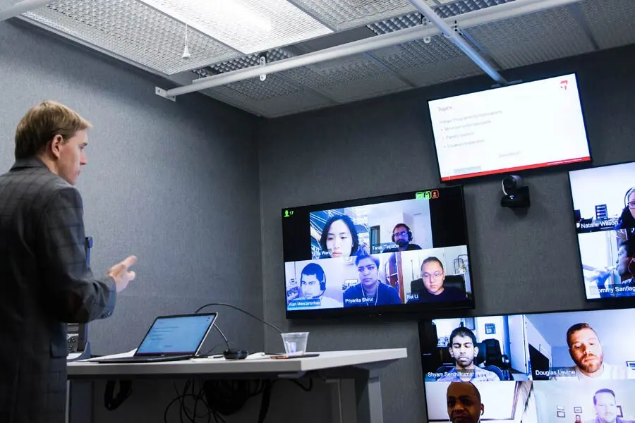
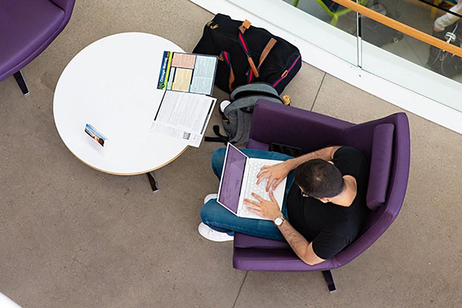
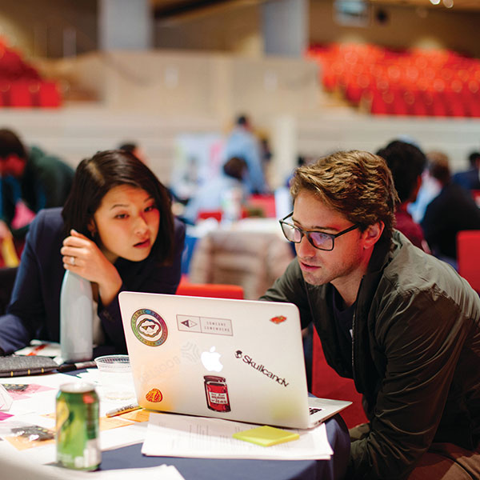

Tepper MBA
The business landscape is changing, and you can co-create its future.
Tepper's STEM-designated MBA program delivers the analytical and leadership skills you'll need to lead where human intelligence unleashes the power of data, and interdisciplinary teamwork drives innovation.
A Top-Ranked MBA Program
#9 Full-Time MBA
Bloomberg Best Business Schools
#3 Online MBA
U.S. News & World Report
#15 Top MBA Program
Poets&Quants
The David A. Tepper School of Business
MBA Formats
Full-Time
- On-site in Pittsburgh
- September-May; summer internship
- Classes Monday-Thursday
- Varied schedule
- Full range of career services
- 2-8 years typical work experience
- 21-month duration

Online Hybrid
- For working professionals
- Flexible online courses
- Immersive weekends several times a year
- Weekly evening/online courses
- Personalized professional development plan
- Full range of career services
- 2-10 years typical work experience
- 32-month duration

Accelerated
- For individuals with undergrad business coursework experience
- Same Full-Time MBA or Online Hybrid MBA program. Faster.
- Full-Time Accelerated: 16 months with internship; 12 months without internship
- Online Hybrid Accelerated: 24 months
- Varied schedule
Teamwork Is Our Engine
You will never find a "one-size-fits-all" program at Tepper. Here, you will see smart students contribute diverse outlooks and skillsets to form a surprisingly close-knit community. Together, you'll collaborate to solve tough business challenges using data and creativity.
With a powerful combination of advanced analytics and personalized leadership coaching, the Tepper MBA gives you a formidable advantage over the competition.
